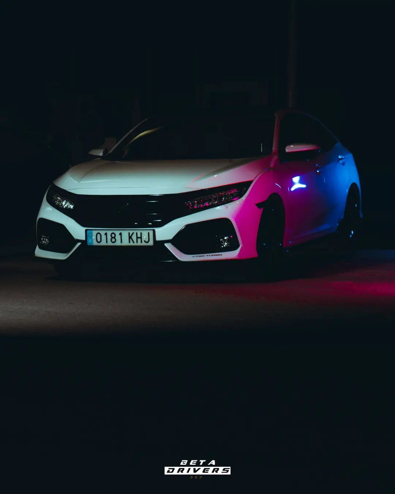
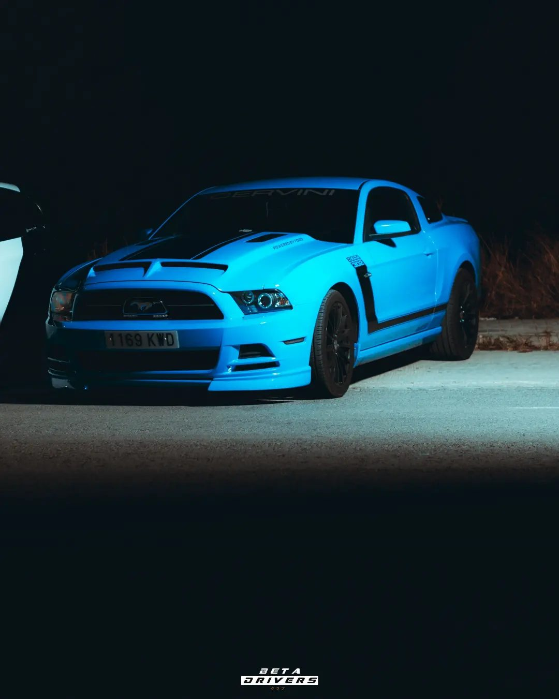
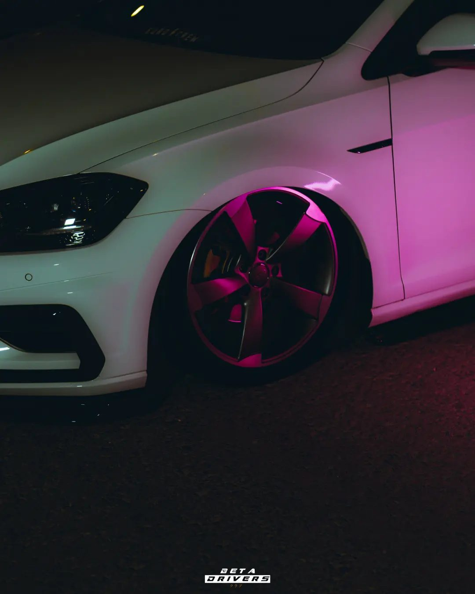
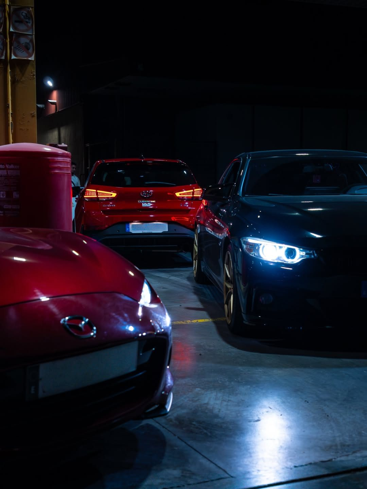
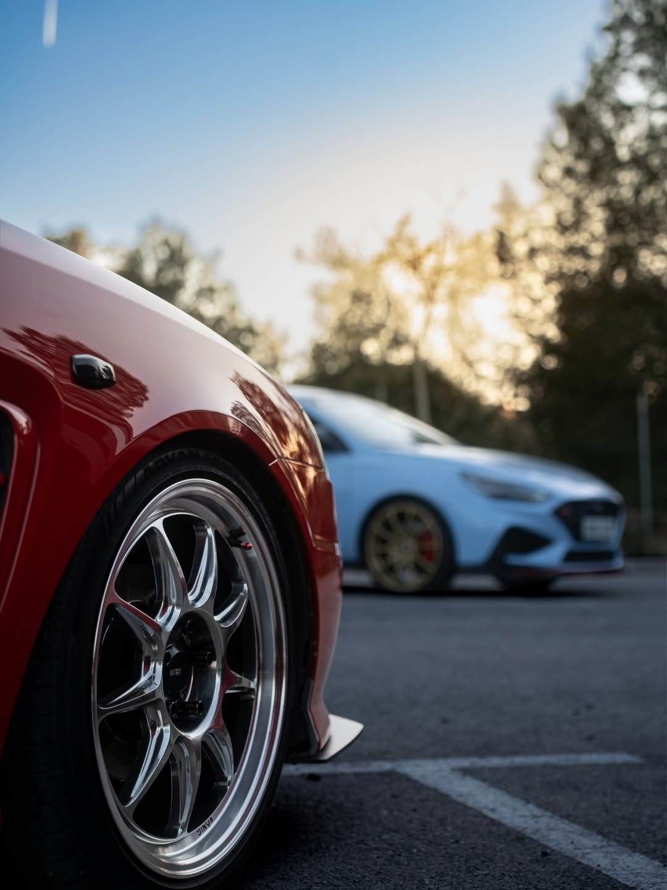
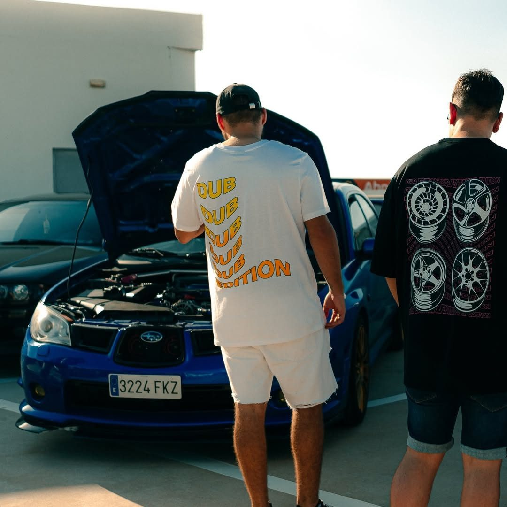

Viernes · noche · comunidad
KDDs DUB EDITION
Las quedadas nocturnas son nuestro punto de encuentro: coches modificados, buen ambiente, conversaciones de motor y una comunidad que se mueve cuando avisamos por los grupos.
Qué son las KDDs
El plan más nuestro: quedar, ver coches y echar un rato.
Las KDDs de Dub Edition son quedadas nocturnas donde nos reunimos para compartir la pasión por los coches modificados. Normalmente se organizan los viernes, avisando previamente por los grupos y canales del club para que la gente pueda enterarse y venir.
Es un ambiente pensado para hablar de proyectos, ver preparaciones, conocer gente nueva, sacar fotos, comentar modificaciones y disfrutar de la cultura automotive desde el respeto. Cada coche tiene algo que contar: una suspensión, unas llantas, una estética concreta, una preparación, un detalle o simplemente el gusto de su dueño.
Para nosotros, una KDD no es solo una reunión. Es el espacio donde se construye comunidad.
Cultura tuning
El tuning bien entendido: identidad, detalle y respeto.
Personalidad
Cada proyecto refleja una forma de ver el coche: stance, racing, OEM+, clean, performance, audio, estética o una mezcla única.
Comunidad
El valor está en compartir: aprender de otros, enseñar lo que llevas, descubrir ideas y crear vínculos alrededor del motor.
Respeto
Dub Edition apuesta por el buen ambiente, el cuidado de los espacios y una cultura de coche que se disfrute sin perder la cabeza.
Galería KDD
Fotos de ambiente, coches y noches Dub Edition.
Una selección de fotos reales de nuestras quedadas: coches, detalles, luces, ambiente y comunidad Dub Edition.






Cómo funcionan
Nos movemos por grupos y avisos.
Cuando hay KDD, se avisa por los grupos/canales oficiales. Ahí se comunica la información necesaria para que todo el mundo se entere: día, hora, zona y cualquier detalle importante.
01. Avisamos por los grupos oficiales.
02. Quedamos normalmente viernes por la noche.
03. Se viene a ver coches, hablar y crear comunidad.
04. Buen ambiente, respeto y actitud Dub Edition.
Quieres enterarte
Las KDDs se viven en comunidad.
Sigue el Instagram y entra al canal para no perderte los avisos, fotos, novedades y próximos movimientos.
VER COMUNIDAD